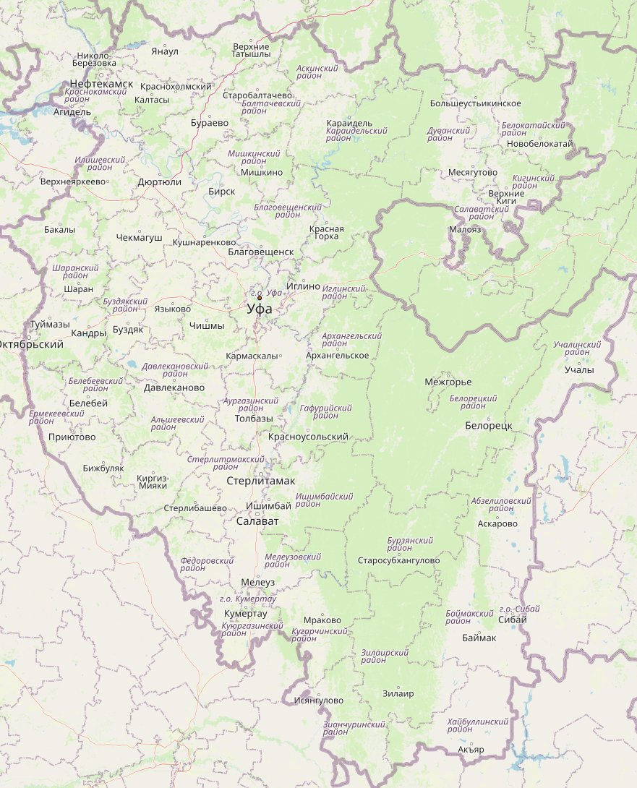

1
2
3
4
5
6
7
8
9
10
11
12
13
14
15
16
17
18
19
20
21
22
23
24
25
26
27
28
29
30
31
32
33
34
35
36
37
38
39
40
41
42
43
44
45
46
47
48
49
50
51
52
53
54
55
56
57
58
59
60
Фильтр по категориям:
Горы
Реки и озёра
Достопримечательности
Города
Горнолыжные базы
RU
EN
👈
Нажмите на точку на карте, чтобы узнать о месте
← Назад
Вперёд →
🌼 Гид по Башкирии 🏔️
×
Гид:
Здравствуйте! Я ваш гид по Башкирии. Нажмите на точку на карте, чтобы увидеть информацию или задайте вопрос в чате.
💬